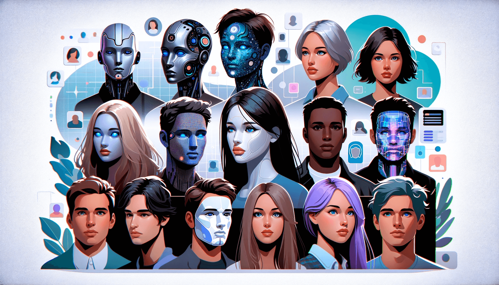
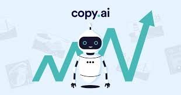
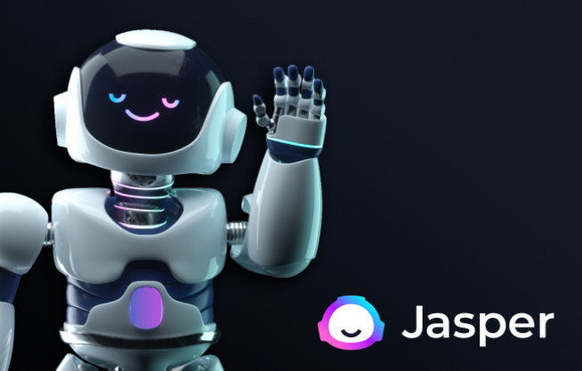
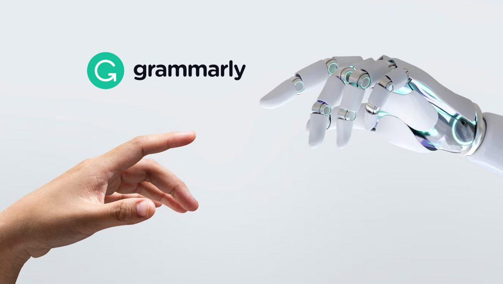
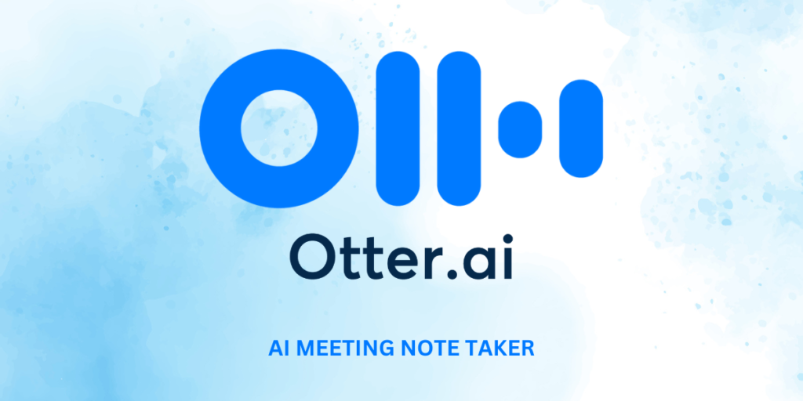
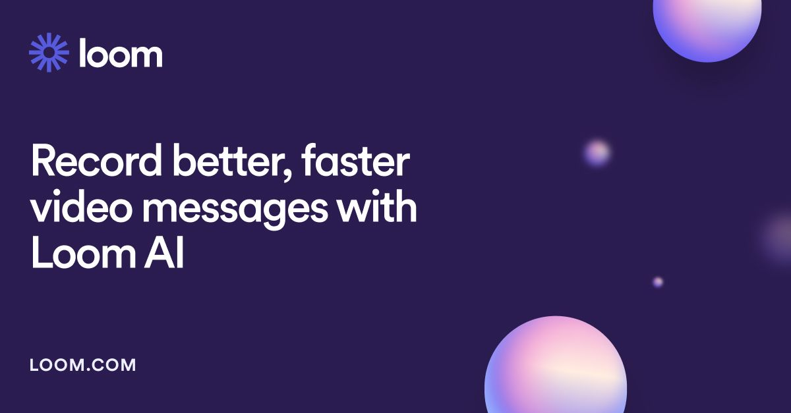
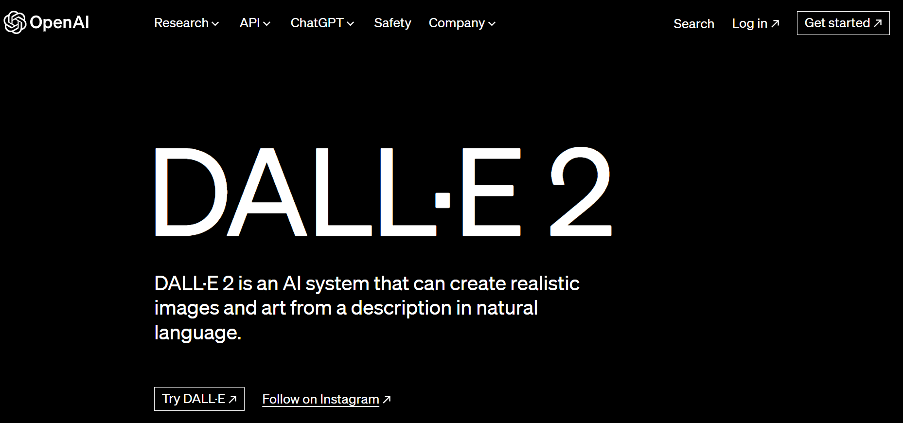

Let's face it, creating awesome content can be a drag. You stare at the blank page, writer's block looming like a monster under the bed. Or maybe you're drowning in a sea of emails and struggling to keep up. But fear not, my friend! The age of friendly AI assistants is here, ready to become your creative partner and productivity ninja.
In this post, I'm going to share some of the coolest free AI tools I've discovered that will turn you into a content creation and workflow superhero.
Design and Content Creation on Autopilot
Canva's AI Art Generator
Ever dreamt of having a personal graphic designer on call? Well, with Canva's AI Art Generator, it's kind of like that! Just type in a few words describing your vision and boom! You've got a unique image to use for your social media post, presentation, or even a wild brainstorming session.
Canva's AI Art Generator allows you to create stunning artwork from text prompts. Simply enter a description, choose a style, and watch as your words transform into beautiful images. It's perfect for presentations, social media posts, and more
RunwayML
RunwayML is an applied AI research company that offers a suite of creative tools designed to enhance human imagination and creativity. Their tools enable users to generate, edit, and explore ideas in near real-time, making it easier to bring concepts to life with high-fidelity visuals and generative media
Feeling like your photos and videos need a little extra oomph? Look no further than RunwayML. This AI playground lets you edit pictures and videos like a pro. Think removing that pesky photobomber or adding some Hollywood-worthy special effects – all with the help of some clever AI.
Lumen5
Lumen5 is an AI-powered video creation platform that enables users to create engaging videos quickly and easily, even without prior experience. It's perfect for businesses, brands, and creatives looking to produce high-quality video content for social media, marketing campaigns, and more.
Say goodbye to video editing woes! Lumen5 is your new AI BFF when it comes to turning your blog posts or scripts into engaging videos. Just feed it your content, and it'll whip up a video complete with music, images, and smooth transitions. Like magic!
Writing that Wows (Without the Tears)
Copy.ai
Copy.ai is an AI-powered writing tool that helps you generate high-quality content quickly and efficiently. It offers features like paragraph rewriting, caption generation for social media, and marketing copy creation to boost your content strategy1.
Writer's block? Never heard of her! Copy.ai is your secret weapon for crafting killer marketing copy, social media posts, product descriptions, and even blog outlines in a flash. It's like having a creative writing genie in your pocket.
Jasper
Jasper is an AI-powered marketing platform designed to help businesses create high-quality content efficiently. It offers a variety of tools for content generation, including blog posts, ad copy, social media captions, and more, all while maintaining brand consistency and personalization at scale.
Another AI writing wizard, Jasper is your go-to guy (or gal!) for all things content marketing. Need long-form content, catchy headlines, or a little SEO boost? Jasper's got your back.
Grammarly
Grammarly is a popular writing assistant tool that helps you catch grammar, spelling, punctuation errors, and offers suggestions for tone, style, and clarity. It's available as a browser extension, desktop app, and mobile keyboard, making it easy to use across various platforms.
This one's not strictly AI, but it uses some serious smarts to make your writing shine. Grammarly acts like your friendly grammar police, pointing out typos, suggesting improvements, and making your writing clear and polished.
Productivity Hacks for the Win
Fireflies.ai
Fireflies.ai is an AI-powered notetaker that transcribes, summarizes, and analyzes meetings across platforms like Google Meet, Teams, Zoom, and more. It helps teams capture key points, action items, and collaborate efficiently by integrating with tools like Slack, Asana, and Notion.
Meetings – love them or hate them, they're a fact of life. But what if you could ditch the note-taking and still capture all the important stuff? Fireflies.ai uses AI to record, transcribe, and summarize your meetings, leaving you free to focus on the discussion and avoid that post-meeting scramble for notes.
Otter.ai
Otter.ai is an AI-powered transcription tool that records, transcribes, and summarizes meetings in real-time. It integrates with platforms like Zoom, Google Meet, and Microsoft Teams, making it easy to capture and share meeting notes, action items, and summaries.
Meetings, interviews, lectures – you name it, Otter.ai can transcribe it in real time with the power of AI. Never miss a beat again, and free yourself from the tyranny of the notepad.
Loom
Loom is an AI-powered video messaging and screen recording tool that helps you create clear, engaging videos with features like auto-generated titles, summaries, chapters, and filler word removal. It's perfect for tutorials, feedback, presentations, and more.
Okay, Loom isn't AI-powered, but it's a fantastic tool for leveraging the power of short videos for communication. Need to explain a concept or give a quick update? Record your screen or yourself, and share it with ease. Perfect for remote teams and asynchronous communication.
Unleashing Your Inner Artist with AI
Midjourney
Feeling creative? Unleash your inner artist with Midjourney, an AI tool that lets you create stunning images based on your wildest descriptions. Want a portrait of a cat riding a unicorn on a rainbow? Midjourney can make it happen!
DALL-E 2
DALL-E 2 is an AI art generator created by OpenAI. It can create high-quality images from text descriptions, blending different elements creatively. With DALL-E 2, you can generate anything from realistic portraits to fantastical scenes based on your prompts.
DALL-E 2 is another powerhouse AI art tool that lets you create photorealistic images with just a text prompt. While currently in closed beta, keep an eye out for this one – it's the future of creative exploration!
Remember
Free plans often have limits
These tools offer free tiers, but they might have limitations on usage or features. Check the details before diving in.
AI is your sidekick, not your replacement
Don't ditch your own creativity! Use these tools to enhance your skills and explore new possibilities.